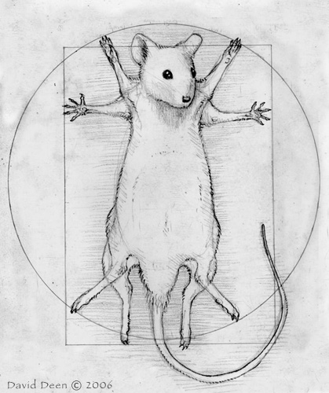
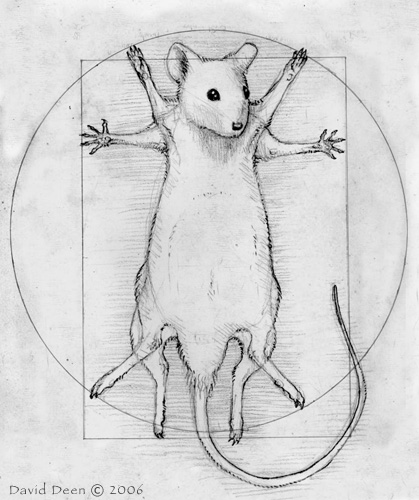

Biostatistics & Medical Informatics, University of Wisconsin – Madison
http://www.biostat.wisc.edu/~kbroman
2
3
4
5
6
7
code | data
8
9
10
Easy or flexible?
11
http://bl.ocks.org/1136236
12
13
14
D3 and stack.js by Mike Bostock
D3 tutorials by Scott Murray
CoffeeScript by Jeremy Ashkenas
Eloquent JavaScript by Marijn Haverbeke
CoffeeScript book by Trevor Burnham
15

 
